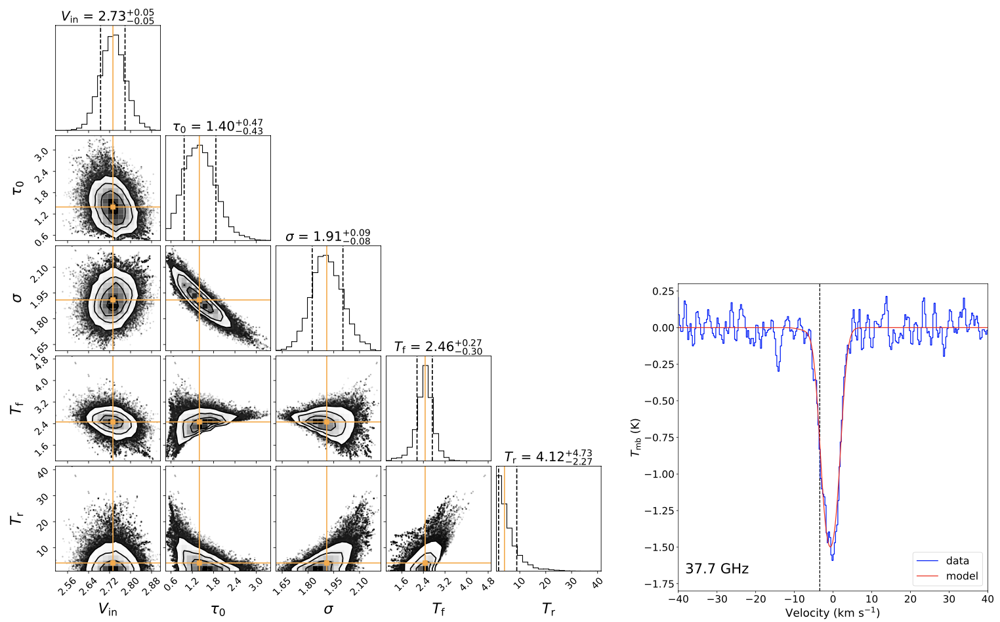

✢ Class I Methanol maser surveys
We searched for class I methanol masers toward BGPS and ATLASGAL sources using the PMO-13.7m, KVN (in single dish mode) and IRAM-30m.
◆ A total of 213 sources showing 95 GHz methanol detections out of 1020 BGPS sources, and 205 of the detections are very likely to be masers. 144 (70%) are new discoveries. Combining with previous detections, we compiled a comprehensive catalog comprising 481 95 GHz methanol masers (Yang et al. 2017).
◆ A simultaneous 44 and 95 GHz class I methanol maser survey toward 144 sources from the 95 GHz class I methanol maser catalog, yeilds 106 new 44 GHz methanol masers.
Emission from the 44 and 95 GHz transitions shows strong correlations in velocity and flux density, indicating that they are likely cospatial. The peak flux density ratio for 95 and 44 GHz decreases as the 44 GHz peak flux density increases (Yang et al. 2020).
◆ We analyzed the 3-mm wavelength spectral line survey of 408 ATLASGAL clumps that cover a full evolutionary stage of high-mass star formation. We found 54 (50 new) masers at 84 GHz, 100 (29 new) masers at 95 GHz, 4 (4 new) masers at 104.3 GHz which increases the known number from 5 to 9. We statistically study the relationship between class I masers and shock tracers, compare the properties between class I masers and their host clumps, also as a function of their evolutionary stage, and constrain the physical conditions that excite multiple class I masers simultaneously (Yang et al. 2023a).
✢ Redshifted methanol absorption tracing infall motions
Gravitational collapse is a crucial process in high-mass star formation, and redshifted absorption against continuum emission is a straightforward and reliable method for identifying inward motions.
Observations of 37 and 16 methanol transitions were conducted toward two well-known collapsing dense clumps, W31C (G10.6-0.4) and W3(OH), using the Effelsberg-100 m, IRAM-30 m, and APEX-12 m telescopes. With the aid of bright continuum background and the over-cooling of methanol transitions which enhance the absorption lines’ detectability, 14 and 11 detected methanol transitions showing redshifted absorption features towards W31C and W3(OH), respectively. Infall velocities from a two-layer model align with previous studies, supporting red-shifted methanol absorption as a reliable tracer of infall motions in high-mass star formation regions.

◇ An example of a two-layer model result using the MCMC fitting for the 37.7 GHz CH3OH line in W31C (Yang et al. 2022)
✢ Maser Investigation toward Off-Plane Stars (MIOPS)
We propose a novel approach to study the the formation history of our Galaxy, using the VLBI measurements to derive accurate 6D information (3D positions and 3D velocities) for the stars that host masers in the thick disk, halo and even the stellar streams.
Here shows our first step to search for maser emission in off-plane objects.
We carried out a sensitive SiO maser (J=1–0, v=1,2) survey toward 102 off-plane O-rich AGBs selected from Mauron et al. (2019), using the Effelsberg-100 m and Tianma-65m telescopes.
SiO masers are newly detected toward eight stars, and provide the stellar radial velocities for the first time. The radial velocities of three stars (G068.881−24.615, G070.384−24.886, and G084.453−21.863) significantly deviate from the values expected from Galactic circular motion.
From the current 6D informations, G068.881−24.615 is likely to arise from the Galactic halo, while G160.648−08.846 is probably located in the Galactic thin disk, and the other six stars probably are within the Galaxy’s thick disk.